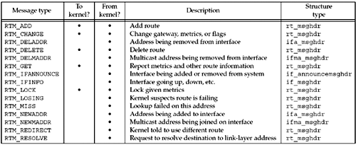
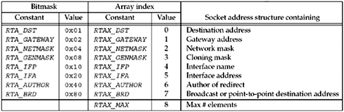
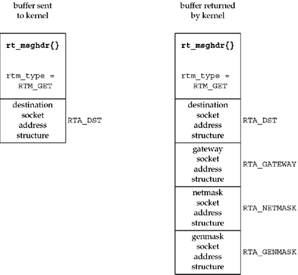

| [ Team LiB ] |
|
18.3 Reading and WritingAfter a process creates a routing socket, it can send commands to the kernel by writing to the socket and read information from the kernel by reading from the socket. There are 12 different routing commands, 5 of which can be issued by the process. These commands are defined by including the <net/route.h> header and are shown in Figure 18.2. Figure 18.2. Types of messages exchanged across a routing socket. Five different structures are exchanged across a routing socket, as shown in the final column of this figure: rt_msghdr, if_announcemsghdr, if_msghdr, ifa_msghdr, and ifma_msghdr, which we show in Figure 18.3. Figure 18.3 The five structures returned with routing messages.
struct rt_msghdr { /* from <net/route.h> */
u_short rtm_msglen; /* to skip over non-understood messages */
u_char rtm_version; /* future binary compatibility */
u_char rtm_type; /* message type */
u_short rtm_index; /* index for associated ifp */
int rtm_flags; /* flags, incl. kern & message, e.g., DONE */
int rtm_addrs; /* bitmask identifying sockaddrs in msg */
pid_t rtm_pid; /* identify sender */
int rtm_seq; /* for sender to identify action */
int rtm_errno; /* why failed */
int rtm_use; /* from rtentry */
u_long rtm_inits; /* which metrics we are initializing */
struct rt_metrics rtm_rmx; /* metrics themselves */
};
struct if_msghdr { /* from <net/if.h> */
u_short ifm_msglen; /* to skip over non-understood messages */
u_char ifm_version; /* future binary compatibility */
u_char ifm_type; /* message type */
int ifm_addrs; /* like rtm_addrs */
int ifm_flags; /* value of if_flags */
u_short ifm_index; /* index for associated ifp */
struct if_data ifm_data;/* statistics and other data about if */
};
struct ifa_msghdr { /* from <net/if.h> */
u_short ifam_msglen; /* to skip over non-understood messages */
u_char ifam_version; /* future binary compatibility */
u_char ifam_type; /* message type */
int ifam_addrs; /* like rtm_addrs */
int ifam_flags; /* value of ifa_flags */
u_short ifam_index; /* index for associated ifp */
int ifam_metric; /* value of ifa_metric */
};
struct ifma_msghdr { /* from <net/if.h> */
u_short ifmam_msglen; /* to skip over non-understood messages */
u_char ifmam_version; /* future binary compatibility */
u_char ifmam_type; /* message type */
int ifmam_addrs; /* like rtm_addrs */
int ifmam_flags; /* value of ifa_flags */
u_short ifmam_index; /* index for associated ifp */
};
struct if_announcemsghdr { /* from <net/if.h> */
u_short ifan_msglen; /* to skip over non-understood messages */
u_char ifan_version; /* future binary compatibility */
u_char ifan_type; /* message type */
u_short ifan_index; /* index for associated ifp */
char ifan_name[IFNAMSIZ]; /* if name, e.g. "en0" */
u_short ifan_what; /* what type of announcement */
};
The first three members of each structure are the same: length, version, and type of message. The type is one of the constants from the first column in Figure 18.2. The length member allows an application to skip over message types it does not understand. The members rtm_addrs, ifm_addrs, ifam_addrs, and ifmam_addrs are bitmasks that specify which of eight possible socket address structures follow the message. Figure 18.4 shows the constants and values for each bitmask, which are defined by including the <net/route.h> header. Figure 18.4. Constants used to refer to socket address structures in routing messages. When multiple socket address structures are present, they are always in the order shown in the table. Example: Fetch and Print a Routing Table EntryWe now show an example using routing sockets. Our program takes a command-line argument consisting of an IPv4 dotted-decimal address and sends an RTM_GET message to the kernel for this address. The kernel looks up the address in its IPv4 routing table and returns an RTM_GET message with information about the routing table entry. For example, if we execute
freebsd % getrt 206.168.112.219
dest: 0.0.0.0
gateway: 12.106.32.1
netmask: 0.0.0.0
on our host freebsd, we see that this destination address uses the default route (which is stored in the routing table with a destination IP address of 0.0.0.0 and a mask of 0.0.0.0). The next-hop router is this system's gateway to the Internet. If we execute
freebsd % getrt 192.168.42.0
dest: 192.168.42.0
gateway: AF_LINK, index=2
netmask: 255.255.255.0
specifying the secondary Ethernet as the destination, the destination is the network itself. The gateway is now the outgoing interface, returned as a sockaddr_dl structure with an interface index of 2. Before showing the source code, we show what we write to the routing socket in Figure 18.5 along with what is returned by the kernel. Figure 18.5. Data exchanged with kernel across routing socket for RTM_GET command. We build a buffer containing an rt_msghdr structure, followed by a socket address structure containing the destination address for the kernel to look up. The rtm_type is RTM_GET and the rtm_addrs is RTA_DST (recall Figure 18.4), indicating that the only socket address structure following the rt_msghdr structure is one containing the destination address. This command can be used with any protocol family (that provides a routing table), because the family of the address to look up is contained in the socket address structure. After sending the message to the kernel, we read back the reply, and it has the format shown at the right of Figure 18.5: an rt_msghdr structure followed by up to four socket address structures. Which of the four socket address structures gets returned depends on the routing table entry; we are told which of the four by the value in the rtm_addrs member of the returned rt_msghdr structure. The family of each socket address structure is contained in the sa_family member, and as we saw in our examples earlier, one time the returned gateway was an IPv4 socket address structure and the next time it was a datalink socket address structure. Figure 18.6 shows the first part of our program. Figure 18.6 First half of program to issue RTM_GET command on routing socket.route/getrt.c
1 #include "unproute.h"
2 #define BUFLEN (sizeof(struct rt_msghdr) + 512)
3 /* sizeof(struct sockaddr_in6) * 8 = 192 */
4 #define SEQ 9999
5 int
6 main(int argc, char **argv)
7 {
8 int sockfd;
9 char *buf;
10 pid_t pid;
11 ssize_t n;
12 struct rt_msghdr *rtm;
13 struct sockaddr *sa, *rti_info[RTAX_MAX];
14 struct sockaddr_in *sin;
15 if (argc != 2)
16 err_quit("usage: getrt <IPaddress>");
17 sockfd = Socket(AF_ROUTE, SOCK_RAW, 0); /* need superuser privileges */
18 buf = Calloc(1, BUFLEN); /* and initialized to 0 */
19 rtm = (struct rt_msghdr *) buf;
20 rtm->rtm_msglen = sizeof(struct rt_msghdr) + sizeof(struct sockaddr_in);
21 rtm->rtm_version = RTM_VERSION;
22 rtm->rtm_type = RTM_GET;
23 rtm->rtm_addrs = RTA_DST;
24 rtm->rtm_pid = pid = getpid();
25 rtm->rtm_seq = SEQ;
26 sin = (struct sockaddr_in *) (rtm + 1);
27 sin->sin_len = sizeof(struct sockaddr_in);
28 sin->sin_family = AF_INET;
29 Inet_pton(AF_INET, argv[1], &sin->sin_addr);
30 Write(sockfd, rtm, rtm->rtm_msglen);
31 do {
32 n = Read(sockfd, rtm, BUFLEN);
33 } while (rtm->rtm_type != RTM_GET || rtm->rtm_seq != SEQ ||
34 rtm->rtm_pid != pid);
1–3 Our unproute.h header includes some files that are needed and then includes our unp.h file. The constant BUFLEN is the size of the buffer that we allocate to hold our message to the kernel, along with the kernel's reply. We need room for one rt_msghdr structure and possibly eight socket address structures (the maximum number that is ever returned on a routing socket). Since an IPv6 socket address structure is 28 bytes in size, the value of 512 is more than adequate. Create routing socket17 We create a raw socket in the AF_ROUTE domain, and as we said earlier, this may require superuser privileges. A buffer is allocated and initialized to 0. Fill in rt_msghdr structure18–25 We fill in the structure with our request. We store our process ID and a sequence number of our choosing in the structure. We will compare these values in the responses that we read, looking for the correct reply. Fill in Internet socket address structure with destination26–29 Following the rt_msghdr structure, we build a sockaddr_in structure containing the destination IPv4 address for the kernel to look up in its routing table. All we set are the address length, the address family, and the address. write message to kernel and read reply30–34 We write the message to the kernel and read back the reply. Since other processes may have routing sockets open, and since the kernel passes a copy of all routing messages to all routing sockets, we must check the message type, sequence number, and process ID to verify that the message received is the one we are waiting for. The last half of this program is shown in Figure 18.7. This half processes the reply. Figure 18.7 Last half of program to issue RTM_GET command on routing socket.route/getrt.c
35 rtm = (struct rt_msghdr *) buf;
36 sa = (struct sockaddr *) (rtm + 1);
37 get_rtaddrs(rtm->rtm_addrs, sa, rti_info);
38 if ( (sa = rti_info[RTAX_DST]) != NULL)
39 printf("dest: %s\n", Sock_ntop_host(sa, sa->sa_len));
40 if ( (sa = rti_info[RTAX_GATEWAY]) != NULL)
41 printf("gateway: %s\n", Sock_ntop_host(sa, sa->sa_len));
42 if ( (sa = rti_info[RTAX_NETMASK]) != NULL)
43 printf("netmask: %s\n", Sock_masktop(sa, sa->sa_len));
44 if ( (sa = rti_info[RTAX_GENMASK]) != NULL)
45 printf("genmask: %s\n", Sock_masktop(sa, sa->sa_len));
46 exit(0);
47 }
35–36 rtm points to the rt_msghdr structure and sa points to the first socket address structure that follows. 37 rtm_addrs is a bitmask of which of the eight possible socket address structures follow the rt_msghdr structure. Our get_rtaddrs function (which we will show next) takes this mask plus the pointer to the first socket address structure (sa) and fills in the array rti_info with pointers to the corresponding socket address structures. Assuming that all four socket address structures shown in Figure 18.5 are returned by the kernel, the resulting rti_info array will be as shown in Figure 18.8. Figure 18.8. rti_info structure filled in by our get_rtaddrs function.
Our program then goes through the rti_info array, doing what it wants with all the non-null pointers in the array. 38–45 Each of the four possible addresses are printed, if present. We call our sock_ntop_host function to print the destination address and the gateway address, but we call our sock_masktop to print the two masks. We will show this new function shortly. Figure 18.9 shows our get_rtaddrs function that we called from Figure 18.7. Loop through eight possible pointers17–23 RTAX_MAX is 8 in Figure 18.4, the maximum number of socket address structures returned in a routing message from the kernel. The loop in this function looks at each of the eight RTA_xxx bitmask constants from Figure 18.4 that can be set in the rtm_addrs, ifm_addrs, or ifam_addrs members of the structures in Figure 18.3. If the bit is set, the corresponding element in the rti_info array is set to the pointer to the socket address structure; otherwise, the array element is set to a null pointer. Step to next socket address structure2–12 The socket address structures are variable-length, but this code assumes that each has an sa_len field specifying its length. There are two complications that must be handled. First, the two masks, the network mask and the cloning mask, can be returned in a socket address structure with an sa_len of 0, but this really occupies the size of an unsigned long. (Chapter 19 of TCPv2 discusses the cloning feature of the 4.4BSD routing table). This value represents a mask of all zero bits, which we printed as 0.0.0.0 for the network mask of the default route in our earlier example. Second, each socket address structure can be padded at the end so that the next one begins on a specific boundary, which in this case is the size of an unsigned long (e.g., a 4-byte boundary for a 32-bit architecture). Although sockaddr_in structures occupy 16 bytes, which requires no padding, the masks often have padding at the end. Figure 18.9 Build array of pointers to socket address structures in routing message.libroute/get_rtaddrs.c
1 #include "unproute.h"
2 /*
3 * Round up 'a' to next multiple of 'size', which must be a power of 2
4 */
5 #define ROUNDUP(a, size) (((a) & ((size)-1)) ? (1 + ((a) | ((size)-1))) : (a))
6 /*
7 * Step to next socket address structure;
8 * if sa_len is 0, assume it is sizeof(u_long).
9 */
10 #define NEXT_SA(ap) ap = (SA *) \
11 ((caddr_t) ap + (ap->sa_len ? ROUNDUP(ap->sa_len, sizeof (u_long)) : \
12 sizeof(u_long)))
13 void
14 get_rtaddrs(int addrs, SA *sa, SA **rti_info)
15 {
16 int i;
17 for (i = 0; i < RTAX_MAX; i++) {
18 if (addrs & (1 << i)) {
19 rti_info[i] = sa;
20 NEXT_SA(sa);
21 } else
22 rti_info[i] = NULL;
23 }
24 }
The last function that we must show for our example program is sock_masktop in Figure 18.10, which returns the presentation string for one of the two mask values that can be returned. Masks are stored in socket address structures. The sa_family member is undefined, but the mask socket address structures do contain an sa_len of 0, 5, 6, 7, or 8 for 32-bit IPv4 masks. When the length is greater than 0, the actual mask starts at the same offset from the beginning as does the IPv4 address in a sockaddr_in structure: 4 bytes from the beginning of the structure (as shown in Figure 18.21, p. 577 of TCPv2), which is the sa_data[2] member of the generic socket address structure. Figure 18.10 Convert a mask value to its presentation format.libroute/sock_masktop.c
1 #include "unproute.h"
2 const char *
3 sock_masktop(SA *sa, socklen_t salen)
4 {
5 static char str[INET6_ADDRSTRLEN];
6 unsigned char *ptr = &sa->sa_data[2];
7 if (sa->sa_len == 0)
8 return ("0.0.0.0");
9 else if (sa->sa_len == 5)
10 snprintf(str, sizeof(str), "%d.0.0.0", *ptr);
11 else if (sa->sa_len == 6)
12 snprintf(str, sizeof(str), "%d.%d.0.0", *ptr, *(ptr + 1));
13 else if (sa->sa_len == 7)
14 snprintf(str, sizeof(str), "%d.%d.%d.0", *ptr, *(ptr + 1),
15 *(ptr + 2));
16 else if (sa->sa_len == 8)
17 snprintf(str, sizeof(str), "%d.%d.%d.%d",
18 *ptr, *(ptr + 1), *(ptr + 2), *(ptr + 3));
19 else
20 snprintf(str, sizeof(str), "(unknown mask, len = %d, family = %d)",
21 sa->sa_len, sa->sa_family);
22 return (str);
23 }
7–21 If the length is 0, the implied mask is 0.0.0.0. If the length is 5, only the first byte of the 32-bit mask is stored, with an implied value of 0 for the remaining 3 bytes. When the length is 8, all 4 bytes of the mask are stored. In this example, we want to read the kernel's reply because the reply contains the information we are looking for. But in general, the return value from our write to the routing socket tells us if the command succeeded or not. If that is all the information we need, we can call shutdown with a second argument of SHUT_RD immediately after opening the socket to prevent a reply from being sent. For example, if we are deleting a route, a return of 0 from write means success, while an error return of ESRCH means the route could not be found (p. 608 of TCPv2). Similarly, an error return of EEXIST from write when adding a route means the entry already exists. In our example in Figure 18.6, if the routing table entry does not exist (say our host does not have a default route), then write returns an error of ESRCH. |
| [ Team LiB ] |
|